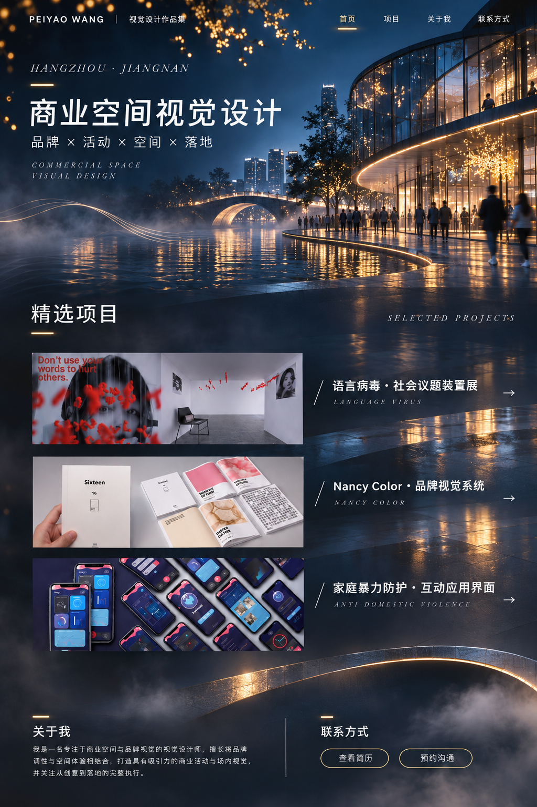

品牌系统
VI / CI、字体、色彩、图形与应用规范。

00 / PROFILE
Between water, light and city.
VI / CI、字体、色彩、图形与应用规范。
KV、线上传播、户外大屏与全场物料延展。
中庭、入口、导视、打卡点与场内氛围。
材料、预算、排期、供应商协同与验收。
01 / COMMERCIAL CASE
Hangzhou Night Tide Season
自主概念提案
商业活动视觉 / 空间美陈 / 制作管理
以钱塘潮线、桥弧、水面倒影和蓝调夜色，重构当代“江南”。
案例覆盖活动策略、KV、户外大屏、入口氛围、场内导视、社交媒体传播及中庭互动装置，让视觉概念贯穿消费者的完整夜游路径。
让创意不止停在效果图，而是进入尺寸、材料、预算、进度与验收。
将银色曲面带、防火薄纱、可编程点光灯串、铝型材桥拱和可复用镜面地台拆解为可执行模块，并建立供应商协作及现场验收流程。
02 / SELECTED WORKS
Four ways of seeing.
视觉系统 / 编辑设计
空间装置 / 动态影像
从手工字形、海报系统到悬挂装置，把“语言传播”转译为空间体验。
以情绪色卡组织内容，并通过纸张、包装与装订测试验证最终成品。
通过标志、图标、色彩与界面建立一致、清晰的公共服务视觉语言。
以红、黑、白构建高对比叙事语言，并延展为动态影像与书籍作品。
03 / SELECTED FILM
Immersive experience.
XR / AR PROJECT
MOTION STUDY · 2024
04 / ABOUT
Design for real places.
我关注品牌视觉如何进入真实空间，并在活动、物料、动线和消费者体验中保持一致。
作品涵盖视觉识别、编辑设计、活动KV、展陈装置、动态影像及交互界面。当前重点发展商业空间视觉与场内美陈方向。
05 / CONTACT
Available for opportunities.
联系方式以正式投递简历为准